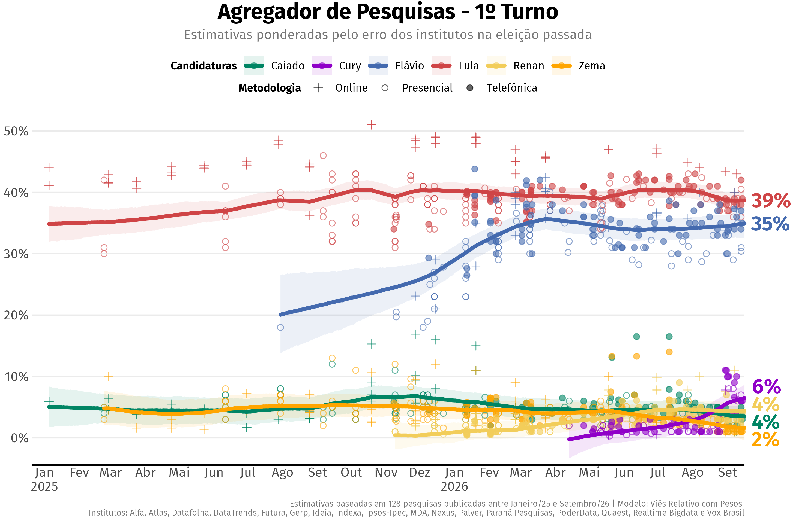
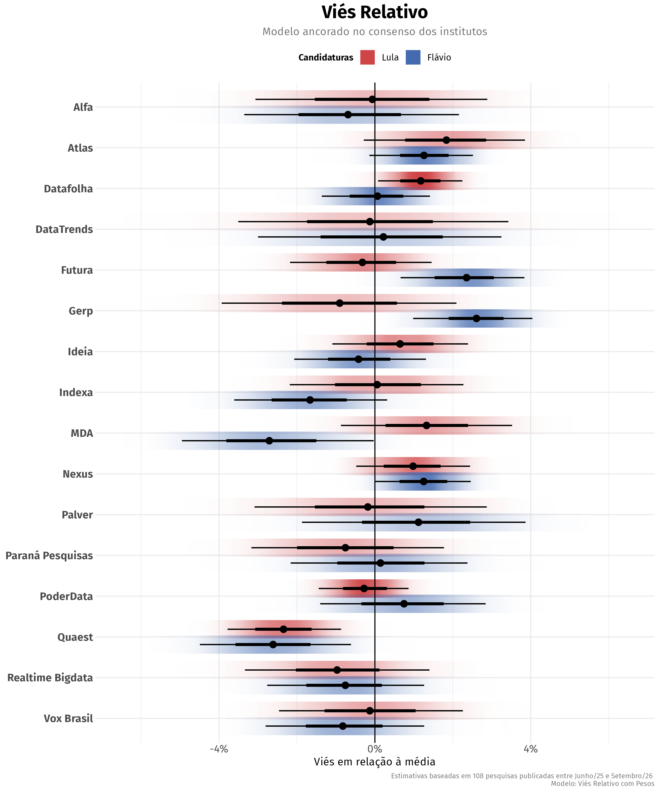
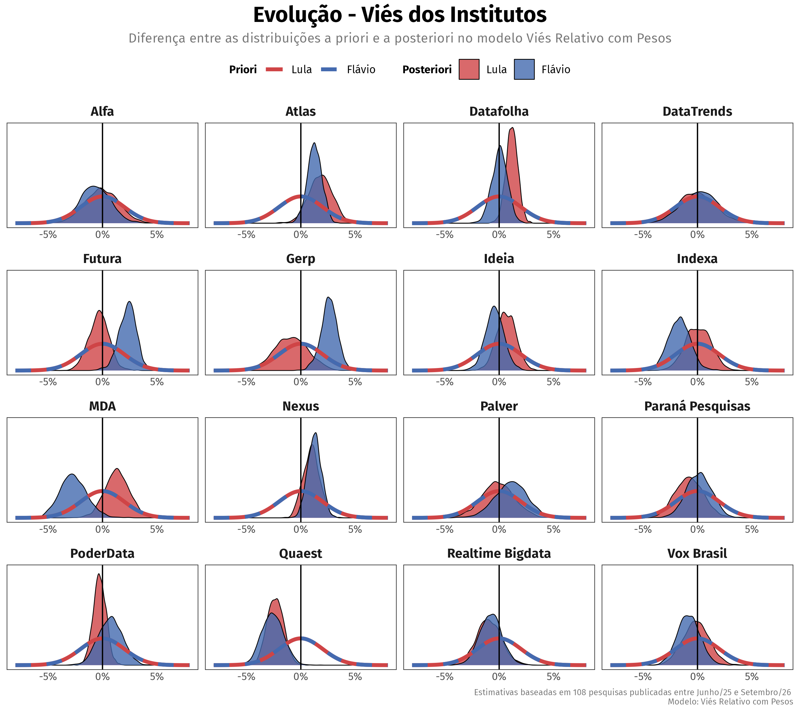
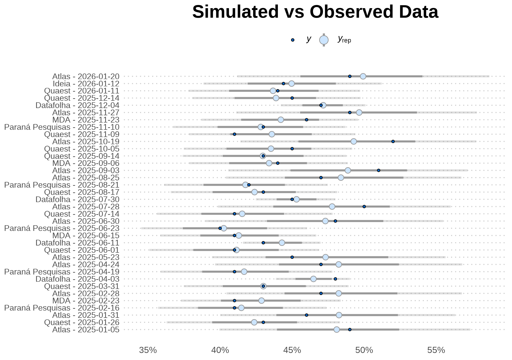
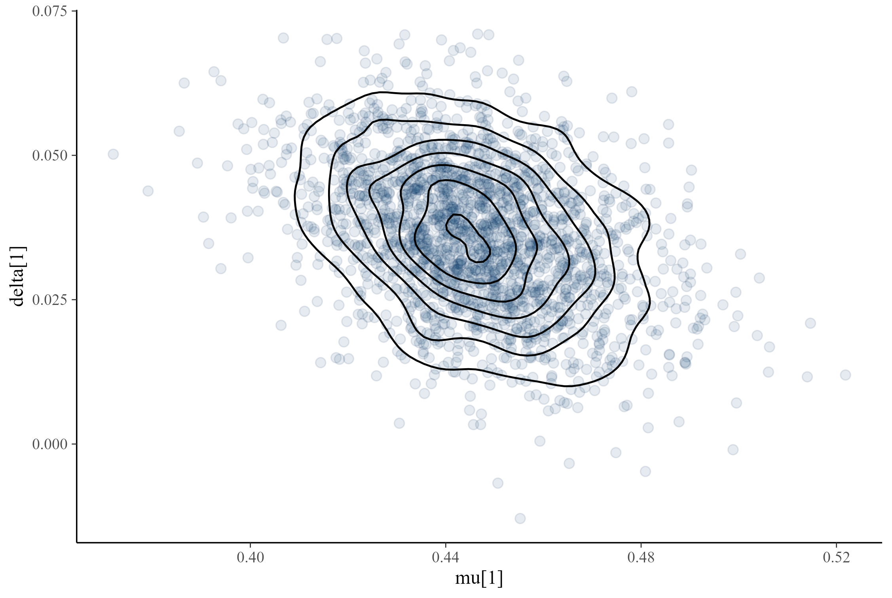
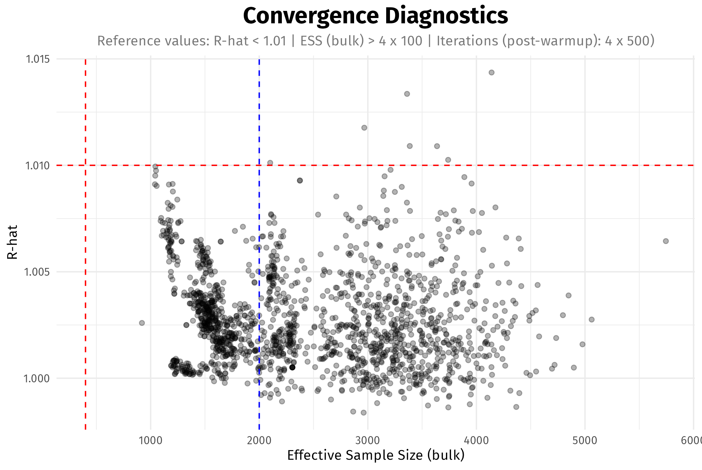

Bayesian State-Space Aggregation of Brazilian Presidential Polls
As presidential elections approach, Brazilian voters are confronted with a growing volume of conflicting polling estimates, each employing distinct methodologies and sampling designs. agregR provides a rigorous framework to filter the surfeit of data and uncover the underlying level of support for each candidate.
The package implements a set of Bayesian state-space models in Stan to normalize polling data from sources that are noisy and possibly biased. It features methods to account for:
- House effects
- Pollster performance in past elections
- Asymmetric accuracy based on candidates’ political alignment
- Polls reporting inflated precision
- Heterogeneous errors for round 1 and round 2 elections
- Non-sampling errors, such as design effects and non-ignorable non-response bias
Installation
agregR is built on CmdStan, the state-of-the-art backend for Stan. Since CmdStan is not available on CRAN (and will likely never be), it needs to be installed separately. This one-time setup yields substantial gains in compilation speed and sampling performance.
We recommend following these installation steps in order:
1. Install compiler
Windows users must first install RTools to enable C++ compilation. MacOS requires Xcode Command Line Tools, and Linux users should install the distribution-specific compiler (e.g., Ubuntu: sudo apt install build-essential).
2. Install CmdStan
The most convenient way to install CmdStan is via the cmdstanr interface.
# Install cmdstanr interface
install.packages("cmdstanr", repos = c("https://stan-dev.r-universe.dev", "https://cloud.r-project.org"))
# Install CmdStan
cmdstanr::install_cmdstan()Optional: make sure everything is in place.
cmdstanr::check_cmdstan_toolchain()3. Install agregR
You can install the stable version of agregR from CRAN with:
install.packages("agregR", type = "source")Experimental: the development (and possibly unstable) version of agregR can be installed with:
if (!require(pak)) install.packages("pak")
pak::pak("rnmag/agregR")Basic Usage
Estimation
The main function rodar_agregador() centralizes data preparation, model compilation, and sampling. It returns the full CmdStanMCMC objects for diagnostics, along with tidy data frames for house effects and daily voting estimates.
library(agregR)
# Execute the aggregation pipeline for a 2nd round scenario
result <- rodar_agregador(
data_inicio = "01/06/2025",
turno = 2,
cenario = "Lula vs Flávio",
modelo = "Viés Relativo com Pesos"
)
# Daily voting estimates + poll data in tidy format
result$votos_estimados
# House effects in tidy format
result$vies_institutos
# Raw model object
result$modelo_brutoVisualization
The package includes a suite of plots designed for public communication.
1. Voting Intentions
Visualizes the estimated voting intention for each candidate overlaying the raw polling data.
grafico_agregador(result)
2. House Effects
Visualizes the systematic bias for each institute, identifying consistent directional skews.
grafico_vies(result, candidaturas = c("Lula", "Flávio"))
3. Bayesian Updating Check
Visualizes how the data has informed the model by comparing prior vs. posterior distributions for selected parameters.
grafico_priori_posteriori(result, tipo = "Viés", candidaturas = c("Lula", "Flávio"))
Advanced Configuration
The package offers configuration functions for fine-grained control over plots and models. Configuration values can be stored in new objects using the functions configurar_agregador(), configurar_prioris() and configurar_grafico(). Alternatively, they can be passed directly as lists to the appropriate arguments.
# Config passed as list: longer run with tighter priors for non-sampling error
result_custom <- rodar_agregador(
turno = 2,
cenario = "Lula vs Flávio",
config_agregador = list(stan_chains = 4,
stan_iter = 2000,
stan_warmup = 2000),
config_prioris = list(sd_tau_priori = 0.01)
)
# Config passed as function: custom color and custom symbols
grafico_agregador(
result,
config_grafico = configurar_grafico(
cores_candidaturas = c("Flávio" = "yellow"),
simbolos = c("Presencial" = 19, "Online" = 2, "Telefônica" = 4)
)
)
# Config passed as object: custom color
config_custom <- configurar_grafico(cores_candidaturas = c(Lula = "green"))
grafico_agregador(result, config_grafico = config_custom)Methodology
Introduction
We are interested in performing inference on the latent state of public opinion: the dynamic, unobserved level of support for each candidate. Polls are periodic snapshots of this state, but the pictures are distorted and grainy.
An apt analogy is a GPS receiver navigating an area with spotty connectivity. It receives sparse, conflicting pings from different satellites, each with its own uncertainty due to corrupted data packages, equipment miscalibration or inherent manufacturer bias. The system must achieve three objectives:
- Data Reconciliation: It must filter the noise from competing sources to resolve a definitive vehicle position.
- Path Estimation: It must reconstruct the trajectory between data points, since movement continues even when satellites lose track of the vehicle.
- Joint Parameter Updating: As new data arrives, the system must simultaneously update the vehicle’s position and re-evaluate the reliability of each satellite.
Much like satellites, pollsters might be miscalibrated. Their readings contain noise introduced by different sampling designs, weighting protocols, and question wording, among other factors. agregR shares the same objectives as the GPS receiver:
- Data Reconciliation: It filters the noise from competing pollsters to isolate the latent state of candidate support.
- Path Estimation: It reconstructs the trajectory of public opinion during polling gaps, ensuring a continuous estimate even when data is unavailable.
- Joint Parameter Updating: As new polls are published, it simultaneously updates candidate support levels and re-evaluates the reliability of each pollster.
Data
Data collection is deliberately unselective. Instead of subjectively deciding which institutes produce high-quality polls, we trust the models to separate the wheat from the chaff.
Polls enter the model with checks on their sample size in order to avoid undue influence from pollsters claiming inflated precision. We calculate an implied \(n\) derived from the published margin of error and compare it to the reported sample size. We use the most conservative figure \(n_{eff}\) to compute specific standard errors for each candidate \(c\) according to their vote share \(v_{i, c}\) in poll \(i\):
\[ \sigma_{i, c} = \sqrt\frac{v_{i, c}(1-v_{i, c})}{n_{eff[i]}} \]
Historical data is sourced from Poder360’s polling database via Base dos Dados.
Conceptual Framework
The methods implemented by agregR build on Jackman (2009). They are variously known as state-space models (SSM), dynamic linear models (DLM) or Kalman filters and consist of two integrated components:
- A state model that estimates the underlying trajectory of candidate support in the periods between polling releases.
- A measurement model that filters incoming observations and updates institute-specific biases. It decomposes uncertainty into sampling error (\(\sigma\)), house effects (\(\delta\)), and an additional non-sampling error term (\(\tau\)) inspired by Heidemanns, Gelman & Morris (2020).
State Model
The latent voting intention for each candidate updates daily according to a local linear trend. The evolution of the latent state through time \(t\) for candidate \(c\) is governed by the level component \(\mu_{t, c}\) and influenced by the trend component \(\nu_{t, c}\).
The level \(\mu_{t, c}\) is defined by the previous state \(\mu_{t - 1, c}\) plus the trend \(\nu_{t - 1, c}\), subject to stochastic level innovations \(\eta_{t, c}\). The trend itself evolves as a random walk driven by innovations \(\zeta_{t, c}\).
\[ \begin{pmatrix}\mu_{t, c} \\ \nu_{t, c}\end{pmatrix} = \begin{pmatrix}1 & 1 \\ 0 & 1\end{pmatrix} \begin{pmatrix}\mu_{t - 1, c} \\ \nu_{t - 1, c}\end{pmatrix} + \begin{pmatrix}\eta_{t, c} \\ \zeta_{t, c}\end{pmatrix} \]
The volatility parameters govern the “stiffness” of the aggregator, where daily innovations \(\eta_{t, c}\) and \(\zeta_{t, c}\) are regularized by candidate-specific scales \(\omega_{\eta, c}\) and \(\omega_{\zeta, c}\), respectively. Pooling across the time series prevents the model from reacting to noise, but leaves room for adaptation when consistent evidence of a shift in public opinion emerges.
\[ \begin{align} \eta_{t, c} &\sim N\left(0, \omega^2_{\eta, c}\right) \\ \zeta_{t, c} &\sim N\left(0, \omega^2_{\zeta, c}\right) \end{align} \]
Measurement Model
When polling data \(i\) for candidate \(c\) is available, the observed result \(y_{i, c}\) from pollster \(j\) at time \(t\) is modeled as a function of the latent state \(\mu_{t(i), c}\) and house effects \(\delta_{j(i), k(i), p(c)}\):
\[ y_{i, c} = \begin{pmatrix}1 & 0\end{pmatrix} \begin{pmatrix}\mu_{t(i), c} \\ \nu_{t(i), c}\end{pmatrix} + \delta_{j(i), k(i), p(c)} + \varepsilon_{i, c} \]
where
\[ \varepsilon_{i, c} \sim N\left(0, \sqrt{\sigma_{i, c}^2 + \tau_{j(i), k(i), p(c)}^2}\right) \]
with subscripts linking poll \(i\) and candidate \(c\) to relevant covariates:
- \(t(i)\): Date of fieldwork
- \(j(i)\): Polling institute
- \(k(i)\): Election round
- \(p(c)\): Political alignment for candidate \(c\) (\(p \in \{\text{left, right, other}\}\)).
In the error term \(\varepsilon\), \(\sigma\) represents a lower bound of uncertainty from sampling theory, whereas \(\tau\) captures the excess empirical variance required to model overdispersion. This non-sampling error parameter accounts for the fact that published interval estimates sometimes entirely miss the election results, and can be used to downweight inaccurate pollsters (see Models Overview).
The scale parameters for \(\delta\) and \(\tau\) are calibrated to address polling sparsity in the early stages of the election cycle, allowing the model to transition gracefully from a prior-dominated regime to a data-dominated one as the volume of polling increases1. Specific values for priors can be modified by the configurar_prioris() function, and details are available in its documentation.
Computationally, the measurement model is designed to prioritize high sampling efficiency and convergence stability (see Model Validation). The normal likelihood provides a convenient approximation of latent support for competitive candidates whose polling numbers do not approach the 0% boundary. Compared to the multinomial implementation proposed by Stoetzer et al. (2019), this normal approximation yields nearly identical inferences for leading candidates, samples significantly faster, and is far less prone to divergent transitions.
In summary, we are explicitly modeling three sources of support uncertainty in polls:
- Sampling Error (\(\sigma_{i, c}\)): The inherent uncertainty derived from the effective sample size of the poll \(i\) and the support level for candidate \(c\).
- House Effects (\(\delta_{j,k,p}\)): A systematic bias specific to pollster \(j\), conditional on the election round \(k\) and the candidate’s political alignment \(p\).
- Non-Sampling Error (\(\tau_{j,k,p}\)): An additional error parameter capturing noise extrinsic to random sampling (e.g., design effects, non-ignorable non-response bias), also localized by pollster \(j\), round \(k\), and political alignment \(p\).
Models Overview
Based on the methods described above, agregR offers a set of models that differ in their assumptions regarding house effects (\(\delta\)) and non-sampling error (\(\tau\)) estimation:
- House Effects: Since \(\mu\) and \(\delta\) are not jointly identifiable, house effects \(\delta_{j,k,p}\) follow a regularizing prior centered either on the pollsters’ average or on electoral results. The anchor choice defines whether house effects are interpreted as relative deviations from the current-cycle consensus or as biases against observed data.
- Non-Sampling Error: Models using localized non-sampling errors \(\tau_{j,k,p}\) as prior means effectively perform automated weighting. This approach penalizes pollsters with higher Root Mean Square Error (RMSE) in the last election while maintaining the flexibility to update its estimates based on current-cycle data. Models employing a global \(\tau\) give every pollster equal weight.
| Model | House Effects | Non-Sampling Error | Description |
|---|---|---|---|
| Viés Relativo com Pesos (Weighted Relative Bias) | Consensus \(\left(\sum_j \delta_{j, k, p} = 0\right)\) | Last election \(\tau_{j,k,p}\) (past RMSE \(\rightarrow \tau\) prior) | A balanced model that weights pollsters by past performance and anchors biases to the current-cycle consensus |
| Viés Relativo sem Pesos (Unweighted Relative Bias) | Consensus \(\left(\sum_j \delta_{j, k, p} = 0\right)\) | Global \(\tau\) shared across pollsters | A “fresh-start” model that relies entirely on current-cycle data, without incorporating historical pollster performance |
| Viés Empírico (Empirical Bias) | Last election \(\delta_{j,k,p}\) (past bias \(\rightarrow \delta\) prior) | Last election \(\tau_{j,k,p}\) (past RMSE \(\rightarrow \tau\) prior) | An empirical model that leans on historical performance to inform both bias priors and pollster weights |
| Retrospectivo (Retrospective) | Actual election result \(\left(\mu_T\right)\) | Global \(\tau\) shared across pollsters | A “backward” model anchored to the ballot result, useful for post-election diagnostics |
| Naive | None | None | Baseline model |
Model Validation
Posterior Predictive Checks
Every Stan model in agregR includes a generated quantities block, enabling Posterior Predictive Checks. Users can verify that the model accurately reflects observed data by simulating poll values from the posterior distribution. The example below demonstrates this using the bayesplot package.
library(bayesplot)
# Setup
cand <- "Lula"
modelo_cand <- result$modelo_bruto[[cand]]
color_scheme_set("mix-brightblue-darkgray")
# Observed data
y <- result$votos_estimados |>
filter(!is.na(percentual_pesquisa) & candidatura == cand) |>
pull(percentual_pesquisa)
# Simulated data
y_rep <- modelo_cand$draws("perc_simulado", format = "matrix")
# Prepare plot labels
pesquisa_id <- result$votos_estimados |>
filter(!is.na(percentual_pesquisa) & candidatura == cand) |>
pull(pesquisa_id)
# Plot observed vs simulated data
ppc_intervals(y, y_rep, prob = 0.67, prob_outer = 0.95) +
scale_x_continuous(labels = pesquisa_id,
breaks = seq_along(pesquisa_id)) +
scale_y_continuous(labels = scales::label_percent()) +
labs(title = "Simulated vs Observed Data") +
xaxis_title(FALSE) +
coord_flip() +
theme_minimal() +
theme(plot.title = element_text(face = "bold", size = 18, hjust = .5),
panel.grid = element_blank(),
panel.grid.major.y = element_line(linetype = "dotted", color = "gray80"),
axis.text.y = element_text(size = 8),
legend.position = "top")
Posterior Geometry and Convergence
Parameter distributions are standardized using Non-Centered Parametrization (Stan Development Team, Efficiency Tuning: Reparametrization). This flattens posterior geometry and addresses the “funnel” problem common in hierarchical models (Gabry et al., 2019), significantly improving sampling efficiency and virtually eliminating divergent transitions in standard scenarios.
# Posterior geometry for selected mu and delta parameters
mcmc_scatter(modelo_cand$draws(),
pars = c("mu[1]", "delta[1]"),
np = nuts_params(modelo_cand), # no divergences to display
alpha = 0.1) +
stat_density_2d(color = "black")
Sampling Efficiency
High sampling efficiency allows for fast models without sacrificing inference quality. Typical values for Effective Sample Size (ESS) and R-hat fall comfortably within recommended benchmarks. Notably, many parameters exhibit an ESS exceeding the nominal number of post-warmup iterations (blue line).
# ESS (bulk) vs R-hat
ggplot(modelo_cand$summary(), aes(x = ess_bulk, y = rhat)) +
geom_point(alpha = 0.3) +
geom_hline(yintercept = 1.01, linetype = "dashed", color = "red") +
geom_vline(xintercept = 400, linetype = "dashed", color = "red") +
geom_vline(xintercept = 2000, linetype = "dashed", color = "blue") +
labs(title = "Convergence Diagnostics",
subtitle = "Reference values: R-hat < 1.01 | ESS (bulk) > 4 x 100 | Iterations (post-warmup): 4 x 500)",
x = "Effective Sample Size (bulk)",
y = "R-hat") +
theme_minimal() +
theme(text = element_text(family = "Fira Sans"),
plot.title = element_text(face = "bold", size = 18, hjust = .5),
plot.subtitle = element_text(hjust = .5, color = "#777777"))
References
Gabry, J., Simpson, D., Vehtari, A., Betancourt, M., & Gelman, A. (2019). Visualization in Bayesian Workflow. Journal of the Royal Statistical Society Series A: Statistics in Society.
Heidemanns, H., Gelman, A., & Morris, G. (2020). An Updated Dynamic Bayesian Forecasting Model for the 2020 Election. Harvard Data Science Review.
Jackman, S. (2009). Bayesian Analysis for the Social Sciences. Wiley.
Stan Development Team. Stan User’s Guide (Efficiency Tuning: Reparametrization). Retrieved from https://mc-stan.org/docs/stan-users-guide/efficiency-tuning.html#reparameterization.section
Stoetzer, L. F., et al. (2019). Forecasting Elections in Multiparty Systems: A Bayesian Approach Combining Polls and Fundamentals. Political Analysis.